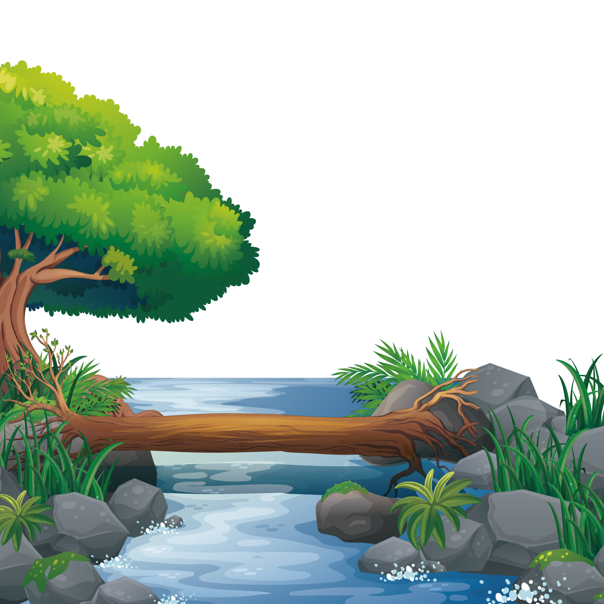
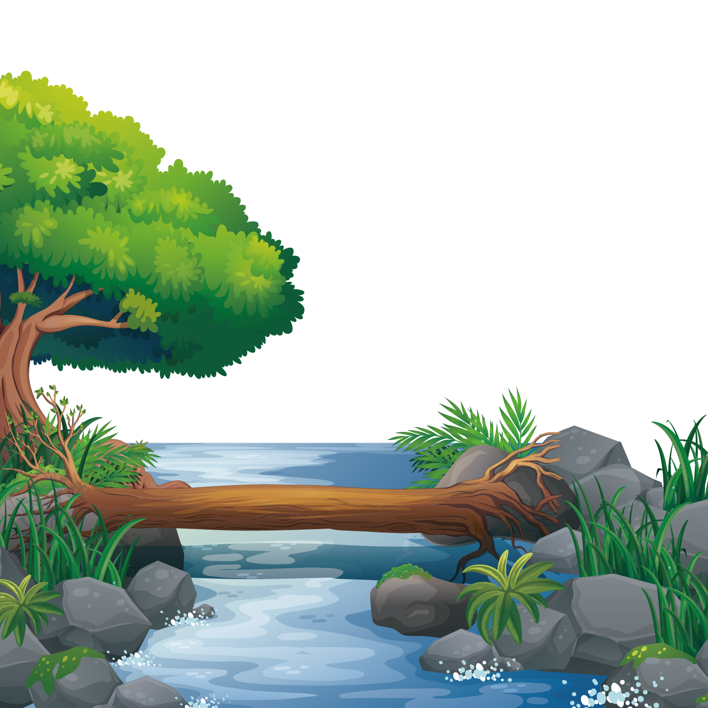
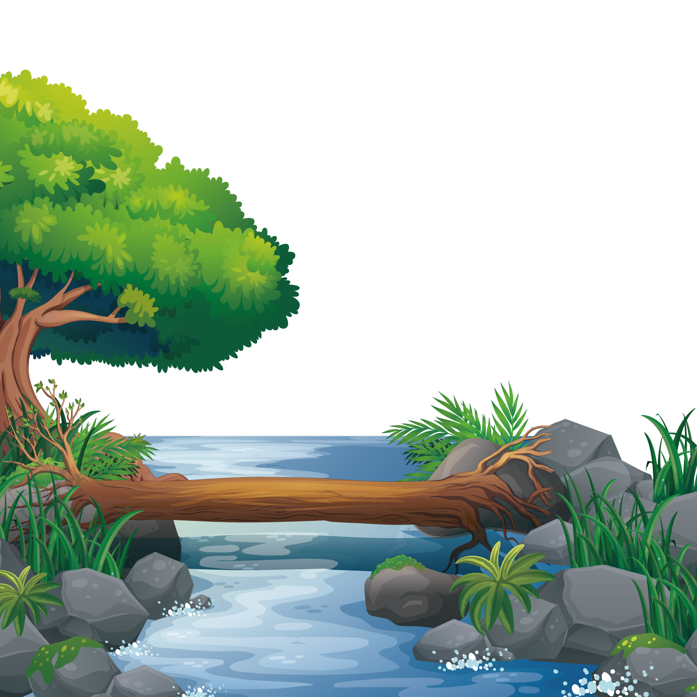

Екосистеми – це витвір природи, де кожен компонент має своє визначене місце та роль. Це складна мережа взаємодій між живими і неживими складовими, яка забезпечує різноманіття життя на планеті.
Важливість екосистем важко переоцінити. Вони є не тільки джерелом різноманіття видів, але й ключовим елементом для збереження екологічної рівноваги. Кожен організм в екосистемі виконує конкретні функції, сприяючи стабільності та продуктивності. Зникнення одного виду може викликати ланцюжок реакцій, який впливає на інші частини системи.
Екосистеми також забезпечують низку екосистемних послуг, які мають безпосереднє значення для людства. Зокрема, вони регулюють клімат, очищують повітря та воду, забезпечують продукти харчування та матеріали для промисловості. Втрата екосистем може призвести до негативних наслідків для здоров'я людей, які можуть почутися через забруднену воду та повітря, а також втрату доступу до ресурсів.
Основною загрозою для екосистем є діяльність людини. Вирубка лісів, забруднення води, зміна клімату – це всі чинники, що призводять до руйнування екосистем. Усвідомлення важливості екосистем та прийняття відповідальності за їхню охорону – це ключові кроки для забезпечення життєздатності нашої планети та збереження її неповторної краси.
